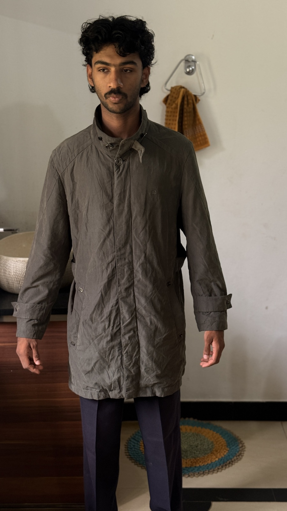
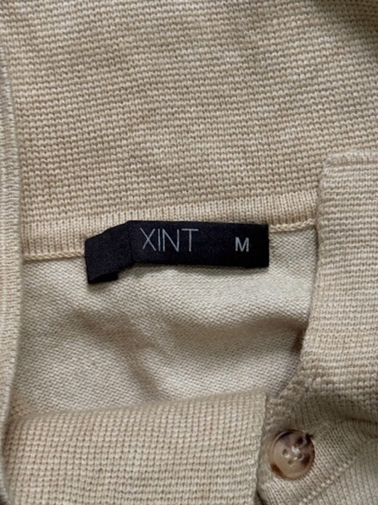

About
A short archive, chosen by one person, photographed properly, priced honestly.
REWORN started with a simple irritation: good clothes were being sold like scrap. A Ralph Lauren linen shirt and a fast-fashion polo end up in the same pile, photographed on the same bed, described with the same three words.
The pieces here were picked one at a time. Some are current-season branded stock. Some are archive — a 1990s Shanghai factory harrington, a Tokyo-made jacket with a red quilted lining nobody sees until you open it. What they share is that each one changes an outfit rather than filling it.
Everything is one of one. There is no size run, no restock, no second colourway. That's not scarcity marketing — it's just what second-hand means.


Product Health. Every listing gets a score out of 100. 100 means original, unworn-looking, no flaws. Anything below is explained in plain language — a snag, a thread pull, honest age. Nothing is hidden and nothing is edited out of the photos.
Before it ships. Steamed, not ironed. Lint-rolled. Buttons and zips checked. Folded on tissue, not stuffed. Linen and knitwear travel flat; outerwear travels on the hanger it lived on.
After it's yours. Cold wash, mild detergent, line dry in shade — that's most of these garments. The vintage outerwear prefers a brush and air over a machine. Wear it, don't preserve it.